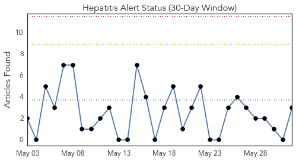
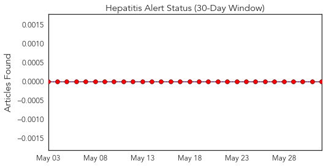
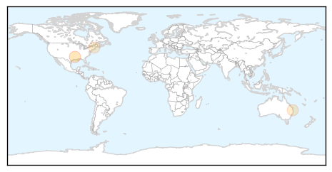
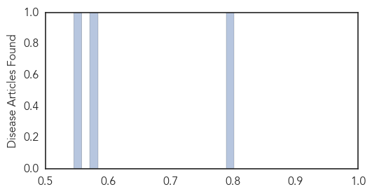

Mumps
30-Day Web Trend
10 alerts, 0 warnings

30-Day Twitter Trend
1 alerts, 0 warnings

Article Locations

Article Confidences

Top Articles:
Top Tweets:
- 0.599
- If you read my item abt a tetanus case & a mumps outbreak in Ont. you may have seen an error re vaccination timing. Editing error now fixed
Hepatitis
30-Day Web Trend
0 alerts, 0 warnings

30-Day Twitter Trend
0 alerts, 0 warnings

Article Locations
Article Confidences
Top Articles:
Top Tweets:
-
No tweets found for Jun 01, 2015